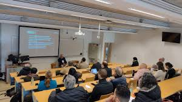
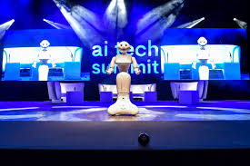
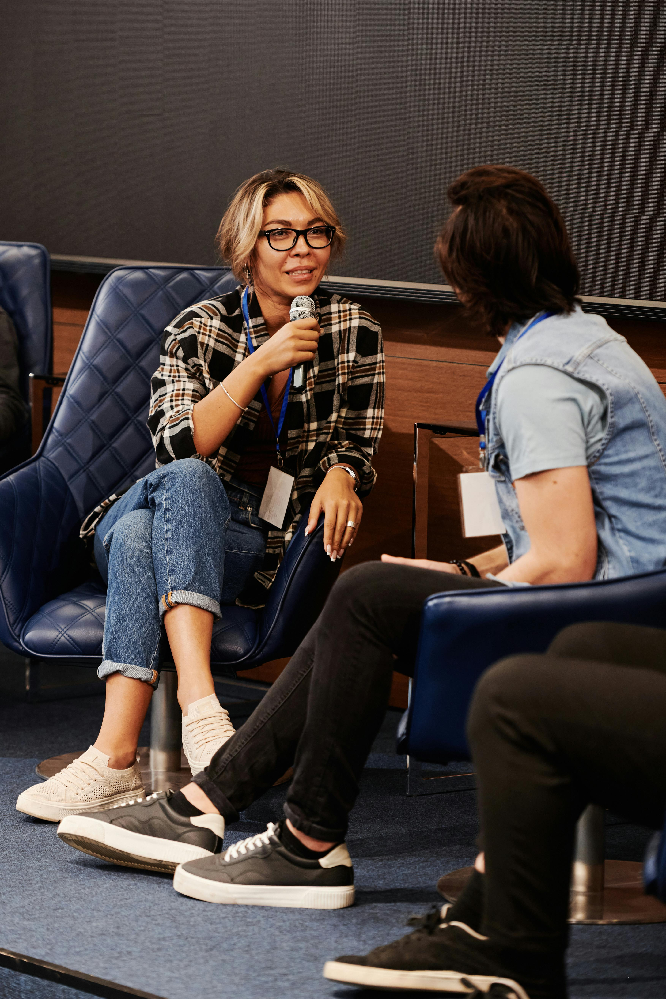
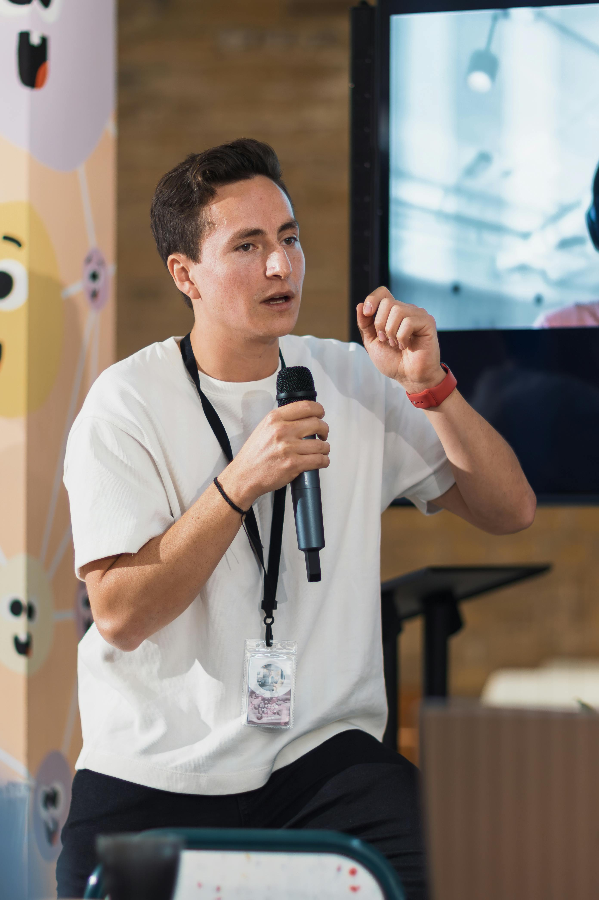
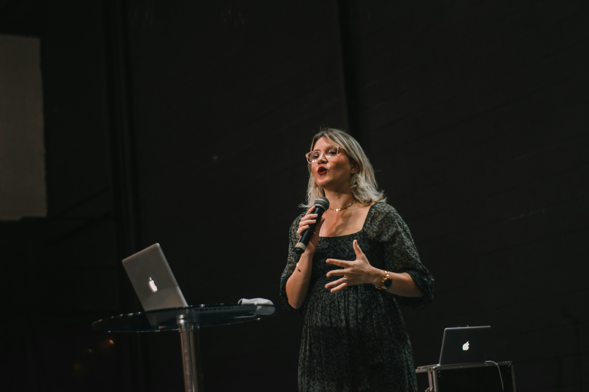
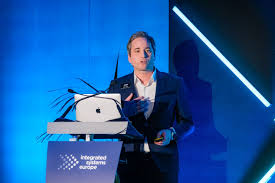
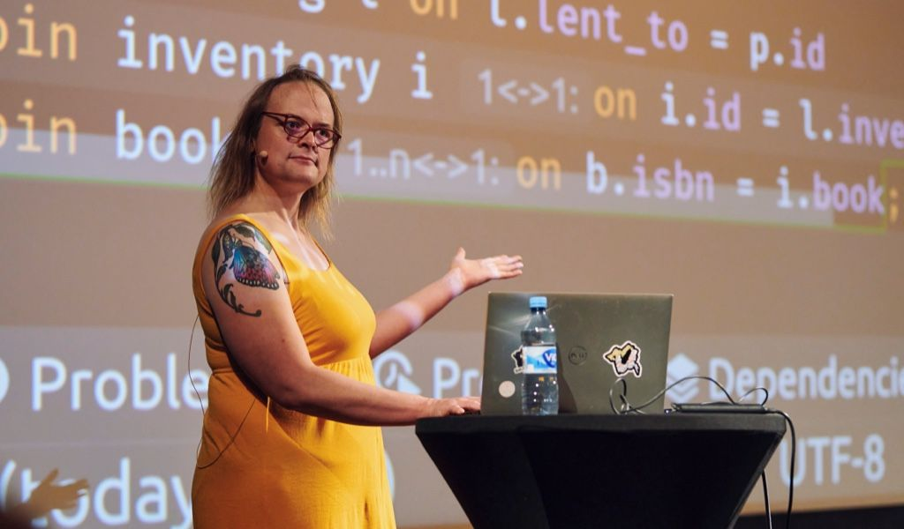
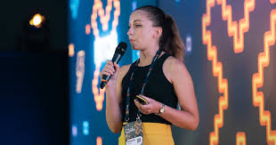

TechCon was born out of a bold vision in 2012—to create a space where innovation, community, and cutting-edge technology collide. What started as a modest local meetup of developers and dreamers has grown into one of the most anticipated global tech conferences. The inaugural event, held in a university auditorium, attracted fewer than 100 attendees but sparked conversations that would shape future tech revolutions.
Over the years, TechCon evolved rapidly alongside the ever-changing landscape of technology. From its early focus on web development and open-source collaboration, the conference expanded to include sessions on product management, UX/UI design, data science, artificial intelligence and machine learning (AI/ML), and engineering leadership. With each passing year, new voices emerged, fresh ideas took the stage, and a strong sense of purpose united developers, designers, product thinkers, and tech leaders.
Today, TechCon stands as a beacon for anyone passionate about building the future. It’s more than a conference—it’s a celebration of curiosity, creativity, and community. Whether you're a startup founder, student, industry veteran, or AI enthusiast, TechCon offers a platform to connect, learn, and be inspired. The journey from humble beginnings to a global tech phenomenon is a testament to what happens when brilliant minds gather with a shared mission: to shape the world through technology.
TechCon 2024: The future is now—global leaders share groundbreaking ideas on the main stage.TechCon 2018: Experts lead a thought-provoking panel on UX/UI design

TechCon 2012: The humble beginning inside a university lecture hall with a passionate group of tech enthusiasts.TechCon 2016: A milestone year marked by a sold-out venue and powerful keynotes from industry pioneers.TechCon 2014: The energy grows as networking and early startup demos take center stage.

TechCon 2022: Experts lead a thought-provoking panel on AI/ML, data science, and ethical innovation.
Our Mission
TechCon exists to spark innovation, build meaningful connections, and inspire the next generation of tech leaders. We believe technology is a powerful force for good—one that can transform industries, solve real-world problems, and bring people together across borders and backgrounds.
Our goal is to create a dynamic, inclusive space where ideas flow freely, skills are sharpened, and collaboration leads to impact. Whether you're a student taking your first steps in tech, a seasoned engineer leading teams, or a creative mind shaping user experiences, TechCon is where your journey accelerates.
Guided by principles of curiosity, growth, and community, we bring together brilliant thinkers in fields like AI/ML, UX/UI, product management, engineering leadership, and more. Symbols like lightbulbs, upward arrows, and connected networks reflect our belief in progress and possibility. At TechCon, you're not just attending an event—you’re becoming part of a movement.
Notable Past Speakers

Amina Yusuf – Champion of Ethical AI and Responsible Tech
Dr. Amina Yusu
AI Researcher & Ethics Advocate
Dr. Amina Yusuf is a leading researcher in artificial intelligence and ethics, known for her groundbreaking work on bias in machine learning systems. She has advised global tech firms on ethical AI deployment and spoke at TechCon 2019 about building trustworthy AI systems for healthcare and education.

Carlos Mendes – Cloud Pioneer and NexaCloud Founder
Carlos Mendes
Founder & CEO of NexaCloud
Carlos Mendes is a pioneer in scalable cloud architecture and the creator of NexaCloud, a platform that revolutionized how startups deploy applications globally. At TechCon 2020, he shared insights on cost-efficient infrastructure and the future of serverless computing.

Sophie Trent – Engineering Lead at Meta and Open Source Contributor
Sophie Trent
Engineering Lead at Meta
Sophie Trent leads large-scale backend systems at Meta and is known for her contributions to open-source performance monitoring tools. At TechCon 2022, she discussed how engineering leadership can shape team culture and drive innovation in high-pressure environments.

Elijah Muriuki – African Data Science Educator and Innovator
Prof. Elijah Muriuki
Data Scientist & University Educator
Prof. Elijah Muriuki, a Kenyan data scientist and educator, has spent over a decade mentoring young tech minds in Africa. His research in predictive analytics has been applied in agriculture and finance. At TechCon 2021, he spoke on the role of data science in solving local challenges.

Lin Wei – UX Strategist and Advocate for Inclusive Design
Lin Wei
UX Strategist & Accessibility Champion
Lin Wei is a respected voice in the UX community and an advocate for accessible design. Her work has shaped the user experience strategies of several Fortune 500 companies. At TechCon 2018, she delivered a talk on designing inclusive products for users with disabilities.

Natasha Ali - Product Leader Empowering Startups to Scale
Natasha Ali
Product Manager & Startup Advisor
Natasha Ali has worked with over 15 early-stage startups to launch impactful digital products across fintech and healthtech. As a TechCon 2023 speaker, she walked attendees through the art of product-market fit and how to scale products responsibly in competitive markets.